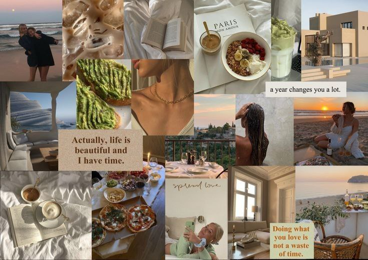

The rise of "internet personalities" and how it is effecting us.
What are internet personalities? Well, if I am the one to define it, I have many definitions. THAT girl, Clean girl, Sigma, Female rage and different kind of aesthetics. We adapt our lifestyles from those internet personalities and aesthetics. That is not wrong. Of course they are inspirational and motivational. Taking inspiration and motivation from those is not wrong “technically” if we have a limit. How it is affecting us? (Bold) Our lives are different from each other and we cannot expect them to fit into one internet personality (or) an aesthetic. We see those aesthetic lifestyles on Tiktok trends such as “THAT girl” “how to get the old money look” and we start comparing our lifestyles to those little snippets we see on social media. When we see those little snippets on social media, we start to compare our lives to their lives. We start to doubt ourselves and feel like we are not enough because our lives are not “aesthetically pleasing” like theirs. The reason why we don't have confidence in ourselves is because we take too much inspiration from other people on social media. The longer it gets, we start to doubt ourselves. I want to call it “inspiration overload”.
The truth The truth is “no one is perfect” and I know you are tired of hearing that but it is the truth. Not even those old money people you admire. Those little snippets you see on social media are just “snippets”. We capture the happy moments and we post them on social media and that is also how other people do. Just showing the highlight of their morning routines doesn't mean their lives are aesthetically pleasing and perfect. No one show their lows and post their rock bottom times as aesthetic on social media.
What we need to do Gratitude. Being grateful for what we have. A person from “my comfort bubble” once told me about what he does when he sees someone who he “thinks better than him”. He said “I just remember the people who accept me for who I am and that way, I feel grateful for being me and not being that random person from internet. I feel grateful for what I have, I feel grateful for people who chose a stone while there's a diamond on other path.” We should be grateful for we have other than focusing on other people lives and what they post as highlights on social media. We have a roof over our heads and a floor under us. We have a bed to sleep in and a house to live. We tend to forget to take inspiration from ourselves sometimes because we just focus on outwards but not inwards. Today I would like to send you a message to remind you that you should take inspiration from yourself and not just from others. Remember gratitude is the key.
written by R | 13.3.2023